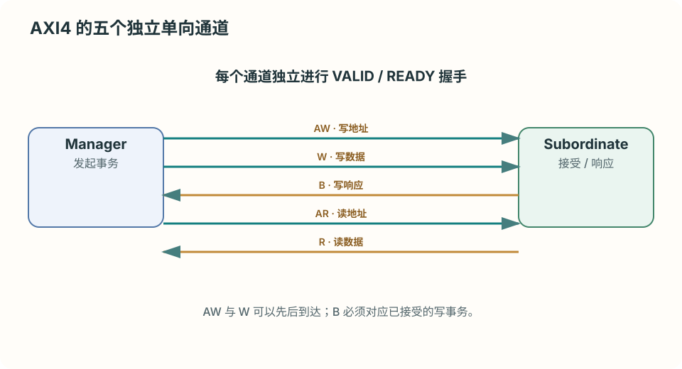
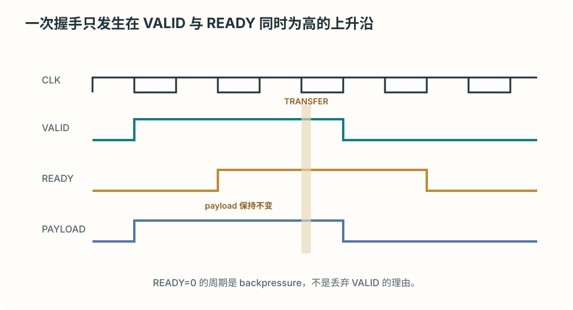
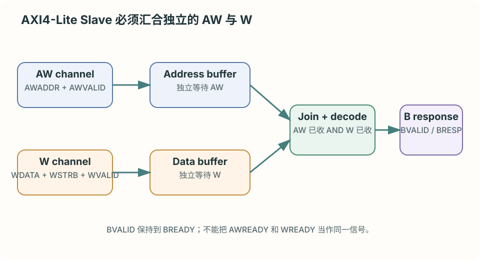

AXI4-Lite：五通道握手与可运行寄存器外设
从 Arm AXI 规范推导 VALID/READY、AW/W 独立握手、WSTRB、响应背压，并实现一个单 outstanding 的 32-bit AXI4-Lite subordinate。
01 / 为什么五根握手信号会变成一套协议？
如果一个加速器、DMA 和处理器外设都使用自己定义的读写握手，系统连接会变成一组彼此不兼容的时序约定。AXI 的价值在于把地址、数据和响应的传输规则标准化，让不同 IP 能通过互连组合。

AXI4 的五个通道是：Write Address（AW）、Write Data（W）、Write Response（B）、Read Address（AR）和 Read Data（R）。每个通道使用 VALID/READY 双向流控；传输只在有效时钟沿且 VALID 与 READY 同时为高时发生。
本章聚焦 AXI4-Lite 32-bit 单次寄存器访问，不是完整 AXI4 burst manager，也不是 AXI4-Stream。Arm IHI 0022H 是协议定义的第一手来源；AMD 的 IP Packager 也提供 AXI4、AXI4-Lite 和 AXI4-Stream 外设模板。Arm AMBA AXI/ACE 协议规范。
02 / VALID/READY：一次传输只在共同采样沿发生

协议的核心规则：
- 源端在数据/地址可用时拉高 VALID，不应等待 READY 才拉高 VALID。
- VALID 一旦拉高，必须保持到一次 VALID && READY 握手发生。
- 握手之前，payload 和控制信息保持稳定。
- 目的端可用 READY 表示当前能够接受事务；READY 可以引入 backpressure。
- 接口输入到输出之间不能存在不符合规范的组合路径。
所以“VALID 拉高了一拍”不等于“事务完成”。如果 READY 一直为 0，源端必须继续保持 VALID 和数据。若 VALID/READY 在上升沿同时为 1，才是一次实际传输。
03 / AXI4、AXI4-Lite、AXI4-Stream 不能混称为 AXI 总线
| 协议 | 地址语义 | 数据组织 | 常见用途 |
|---|---|---|---|
| AXI4 | 内存映射，可突发 | AW/W/B 与 AR/R 通道 | DDR、DMA、存储访问 |
| AXI4-Lite | 内存映射，单次传输 | 无 burst，支持字节 strobe | 控制寄存器和状态寄存器 |
| AXI4-Stream | 无地址 | 连续数据流及 sideband | 视频、DSP、包处理 |
AXI4-Lite 不是把 AXI4 的 burst length 固定为 1 就可以随意删掉所有协议检查。它有自己的信号集合和限制：数据宽度为 32 或 64 bit，传输为单拍，不能执行 exclusive access；读写地址与数据通道仍然独立。AXI4-Lite 的字节写使能通过 WSTRB 表达。
在 32-bit 实现中，WSTRB 有 4 个 lane：bit 0 对应 WDATA[7:0]，bit 1 对应 [15:8]，bit 2 对应 [23:16]，bit 3 对应 [31:24]。若某个 lane 的 strobe 为 0，该字节必须保持不变。
04 / 一个寄存器外设：先汇合 AW 与 W，再返回 B

本章示例的寄存器映射：
| 偏移 | 寄存器 | 权限 | 语义 |
|---|---|---|---|
0x00 | CTRL | RW | 低 4 bit 驱动 LED，支持 WSTRB |
0x04 | STATUS | RO | 读取外部 status_i |
0x08 | SCRATCH | RW | 软件可读写测试寄存器，支持 WSTRB |
0x0C | ID | RO | 固定值 0x46504741 |
写地址 AW 和写数据 W 可以同拍、先后到达。Slave 需要分别记录已接收的地址与数据，不能假设两路 VALID 总会同步出现。示例限制为每次只允许一个未完成写响应：BVALID 拉高后一直保持到 BREADY 握手。
05 / RTL 与验证：响应背压、WSTRB 和错误地址
实现位于 examples/rtl/axi4lite_regs.v，验证位于 examples/tb/tb_axi4lite_regs.sv。DUT 采用单 outstanding 事务模型，AW/W 各有一个 holding register；两者都完成握手后才写寄存器。
bash scripts/run_rtl_tests.sh
# Questa-Altera 本地运行
vsim -c -do sim/questa/run.do自检覆盖 AW-first、W-first、AW/W 同拍、字节 strobe、读写寄存器、只读地址写入、非对齐地址、未映射地址，以及 BREADY/RREADY 拉低时响应是否保持稳定。
读通道同样有一个 outstanding response：RVALID 拉高后，RDATA 和 RRESP 保持不变直到 RREADY 握手。示例对未映射和非法写访问返回 SLVERR。
如果 AWVALID 已握手，但 WVALID 过了 5 个周期才到，Slave 应该怎样做？
保留已接收的 AWADDR，并继续等待 W 通道。不能重复接受另一个 AW，也不能提前产生 BVALID；只有地址与数据都被接受并完成寄存器操作后，才返回写响应。